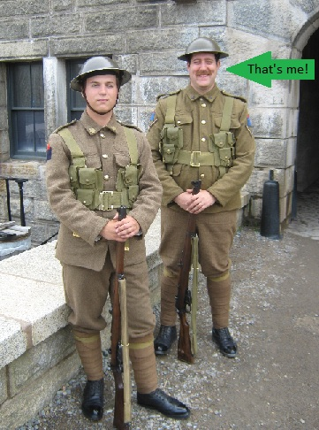
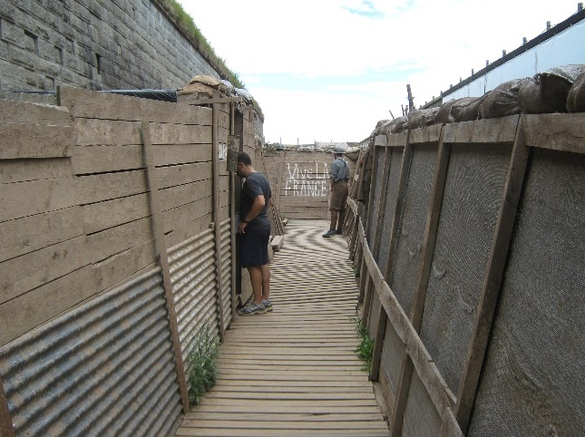

I remember growing up and visiting our national parks. It was always a way to escape and explore the world around us. Having the opportunity to work for an organisation that also loves the outdoors was a dream come true
 I worked for Parks Canada during the summers and some of the fall seasons of 2016 to 2021. These took place within mainland Nova Scotia. Over these six years, I got to be a part of some of the coolest exhibits in Canada! Pictured here is my collegue Jacob and I, standing guard for a cerimonial day at the Halifax Citadel. Our role was to be the some of the first contact points for visitors to the site. This was in addition to what I thought was the coolest part of the job!
 I worked for Parks Canada during the summers and some of the fall seasons of 2016 to 2021. These took place within mainland Nova Scotia. Over these six years, I got to be a part of some of the coolest exhibits in Canada! Pictured here is my collegue Jacob and I, standing guard for a cerimonial day at the Halifax Citadel. Our role was to be the some of the first contact points for visitors to the site. This was in addition to what I thought was the coolest part of the job!